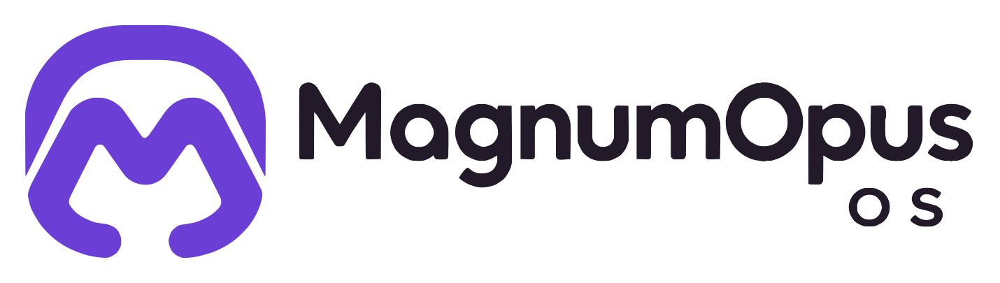
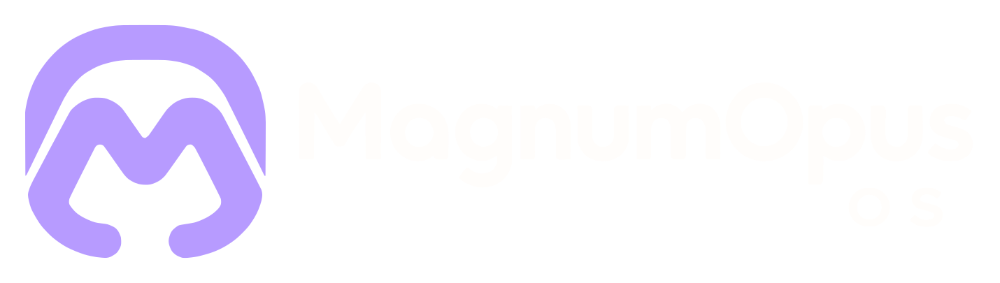

Vzhled a ovládání
Prototypy GUI systému MagnumOpus-OS v charakteru Vřelý. Každá stránka má nahoře přepínač motivu (podle denní doby, světlý, tmavý), vysoký kontrast, velikost písma a omezení pohybu. Prototypy nejsou kód systému: ukazují vzhled a chování pro knihovnu UI a kompozitor.
Design systém
Barvy s kontrolou kontrastu WCAG, typografie, mřížka, zaoblení, stíny, ikony, pohyb, komponenty.
Okna
Anatomie, odznak důvěry s odebíráním oprávnění, režimy (vlastní titulek, bez rámu, celá obrazovka), stavy.
Plocha
Nastavitelná lišta, přepínání oken, oznámení, systémové dialogy, výběr souboru (powerbox), bezpečná obrazovka, správce úloh.
Terminál
Bloky výstupu, tabulky se schématem, doplňování podle typů, nanečisto a undo, vysvětlení chyb, panel úloh, zápis B / C.
Soubory
Časová osa verzí a obnova, „zkusit bokem“ v klonu, převzetí vybraných změn, konflikty, agent pracující bokem.
Nastavení
Profily zabezpečení Standardní / Přísný / Volný, samostatné volby (ověření klávesnice proti BadUSB), vzhled, přístupnost.
Přihlášení
Zamčená obrazovka, výběr účtu, bezpečnostní fráze, režim s bezpečnou zkratkou.
Start systému
Logo s prstencem průběhu, log na Esc, zdržení kroku a přechod znaku do avataru přihlášení.
Varianty stylu (archiv)
Tři původní varianty A / B / C, ze kterých uživatel vybral C. Zůstává pro historii rozhodnutí.
Rozhodnutí ke stylu (odsouhlaseno 7. 11. 2026)
| Otázka | Rozhodnutí | Důsledek |
|---|---|---|
| Charakter | C, Vřelý | fialový akcent, teplé pozadí, zaoblení 18 px u oken a 10 px u prvků, tlačítka jako pilulky |
| Lišta | nastavitelná, výchozí odsazený pruh dole | 6 poloh (dole odsazená, dok, dole přes šířku, vlevo, vpravo, nahoře); změna v Nastavení nebo pravým tlačítkem na liště |
| Ikony | linkové, zaoblené | tah 1,75 px na mřížce 24 px, barva z textu |
| Písmo | Inter + JetBrains Mono | obě pod OFL; Tuffy a Noto Sans Mono zůstanou jako záloha |
| Výchozí motiv | podle denní doby | světlý ve dne, tmavý po západu slunce; přechod prolnutím, ne během psaní |
| Startovací obrazovka | A + log z B, přechod do avataru | logo s prstencem, Esc = log, při zdržení „čeká na: …“, na konci znak vjede do avataru |
| Logo | symbol M + nápis MagnumOpus OS | vektory v assets/logo/; fialová #6b3fd6 na světlém, levandulová #b79bff na tmavém |
| Označení agenta AI | vyhrazená barva + ikona + slovo | korálová jen pro agenta, vždy s ikonou a slovem „agent“ |
Popis návrhu: docs/cs/vzhled.md a docs/en/appearance.md. Tokeny jako data: design/tokens.toml.